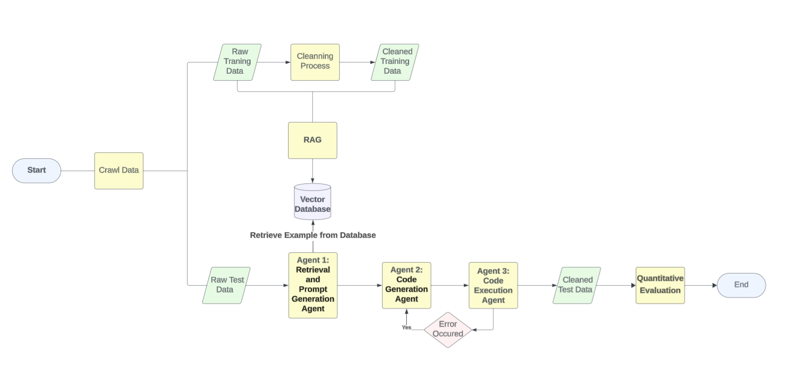

Introduction
AI-Enhanced E-commerce Data Engineering Project Introduction
Team Members: Yuer Wang, Zining Wang, Jiatong Liu, Xue Qin
Abstract
As e-commerce continues to grow rapidly, massive amounts of transaction data are generated daily across various platforms, such as Amazon, eBay, and Shopify. This data comes in multiple formats, including CSV, JSON, XML, and others, and often contains inconsistencies such as missing values, incorrect product descriptions, and formatting issues. These challenges make it difficult to process, clean and transform the data efficiently for analytics or machine learning tasks. In order to address these challenges, our project aims to use real-life datasets to train AI-powered agents and generate Python classes to automate the detection of data formats, schema inference, cleaning, transformation, and storage, improving scalability, accuracy, and efficiency in e-commerce data workflows. As a result, the cleaned-up datasets would satisfy future data analysis purposes.
In this project, we will use raw datasets crawled from several E-commerce platforms such as Amazon, eBay, and Shopify as training data, which will contain missing values, data of various formats, values that do not make sense, etc. We will leverage Large Language Models (LLMs) including OpenAI’s models, Anthropic AI model, and Meta AI offerings to generate code for data transformation, cleaning, and validation processes through advanced prompt engineering techniques. Finally, we will test our model on synthetic data to enhance model performance.
Our approach will explore potential significant improvements in data processing efficiency and accuracy compared to traditional systems. The study will assess the agent’s capacity to manage schema mapping, automate everyday data transformation tasks, and expedite integration setup procedures, ultimately making large-scale e-commerce data management more efficient and effective for future analysis.
Data Source and Preparation
Data source
We crawled the data from the Amazon E-commerce platform, including the products from many categories, for example, electronics, makeup, furniture, stuffed animals, pet care, and so on. The variables of each entry include: product_categories, product_id, rating_start, Review_counts, Price, Amazon Prime (yes or no), product_url, etc. The crawled data have missing values, integers, dates, and complicated, unstructured text data. The data types include excel format, json format, csv format, and xml format.
Data Preparation
To make the dataset more diverse, we crawled data from different products and saved them in every data type. So, we will have 3 to 4 different datasets in every data type. We also intentionally make the dataset schema different for each data type, so the agent will be familiar with how to deal with a variety of input data during the training step.
Project Workflow

From the above workflow, we can start the AI-enhanced data engineering from very begining.
Data Preperation
We crawl the data from Amazon, and split the data into:
- Raw Training data
- Raw Test data
For the training data, we manipulate the whole cleaning process and saved the cleaned Training data for the Retrieval Argumented Generation Process.
RAG Process
After we have the cleaning example, we used Faiss to store the dataset schema and cleaning process into vector database.
Multi-Agents System
We have 3 agents and each agent will perform its role.
- Agent 1: Retrieval from the database and detect the input test data file, forming the cleaning instruction to the next agent.
- Agent 2: Follow the first agent’s insruction generating the cleaning code.
- Agent 3: Execute the code that generated from Agent 2, and collect the error information. If error occured, it would return the error message to the second agent to regenerate code until the code work.
Evaluation
To assess the performance of our AI-enhanced data cleaning system, we conducted a comprehensive evaluation focusing on both the quality and consistency of the outputs.
We used two complementary approaches:
Quality Evaluation (RAGAS Framework):
We measured the faithfulness, relevancy, and factual correctness of the AI-generated cleaning instructions across different file formats.Consistency Evaluation:
We analyzed the similarity of prompts, generated code, and final cleaned outputs across varied formats (CSV, JSON, XLSX, XML) to verify robustness and stability.
These evaluations allowed us to assess not only how accurately the system generates responses but also how reliably it maintains consistent behavior across heterogeneous data inputs.
The results highlight both the strengths of our current system and areas for future improvement.